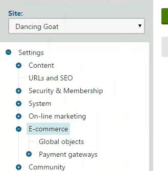

Configuring e-commerce settings for a specific site or globally
When configuring an e-commerce setting that can be both site and global, you can choose between the Store configuration and Multistore configuration application. On this page, you can find out when to use which application and to what you should pay attention.
Using the Store configuration application
Choose the Store configuration application if you want to set the setting for the current site.
Some of the store settings are also (or only) available in the E-commerce setting category in the Settings application if you select your current site in the Site drop-down list. You can check the availability of each setting in Settings - E-commerce.

Selecting a site in the Site field
If you want to configure settings for a specific site:
Open the Store configuration application and navigate to the specific setting.
Set whether the specific setting should be inherited from global settings (settings configured in the Multistore configuration application).
Select the check-box with the Inherit from global settings label to inherit the specific setting from global settings.
Clear the check-box with the Inherit from global settings label to configure the setting for the specific site.
Setting inheritance from global settings
If you cleared the inheriting check-box, enable or disable the setting.
Select the check-box without any label to enable the setting.
Clear the check-box without any label to disable the setting.
Configuring a setting for a specific site
Save your changes.
The system then acts according to your site and global setting changes.
Choosing site or global e-commerce configuration
Configuring e-commerce settings for a specific site or globally
Using the Multistore configuration application
Choose the Multistore configuration application if you want to set the settings globally.
Some of the multistore settings are also (or only) available in the E-commerce setting category in the Settings application if you leave (global) in the Site drop-down list. You can check the availability of each setting in in Settings - E-commerce.
Leaving the (global) option in the Site field
If you want to configure settings globally:
Open the Multistore configuration application and navigate to the specific setting.
Enable or disable the setting.
Select the check-box to enable the setting.
Clear the check-box to disable the setting.
Configuring a setting globally for all sites
Save your changes.
Check that all sites inherit from global settings.
Switch to a site.
Switching to a different siteOpen the Store configuration application and navigate to the specific settings.
Select the check-box with the Inherit from global settings label to inherit the specific setting from global settings.
Setting inheritance from global settingsSave your changes.
Repeat the check for all your sites.
The system then acts according to your site and global setting changes.